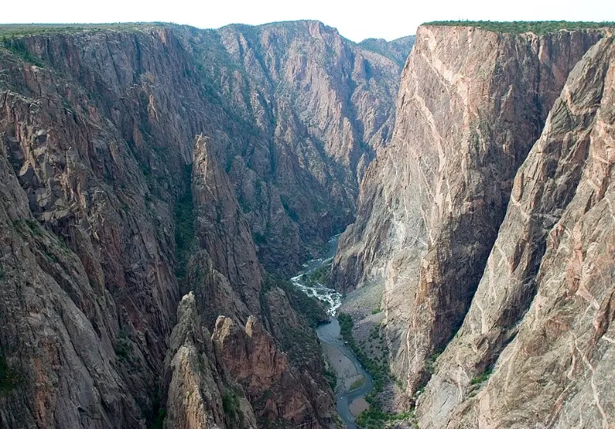
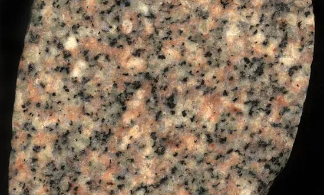
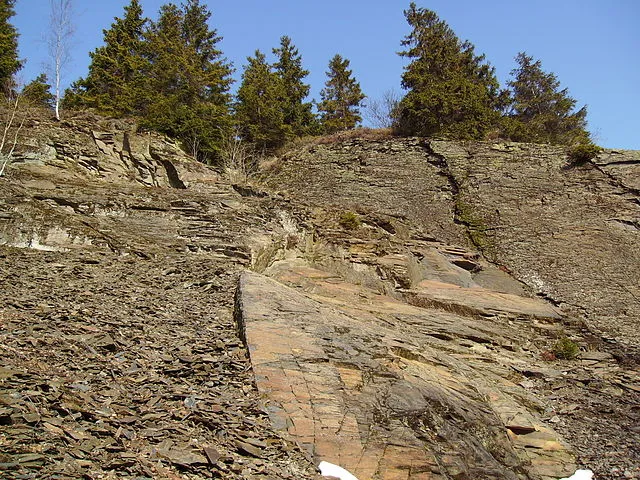
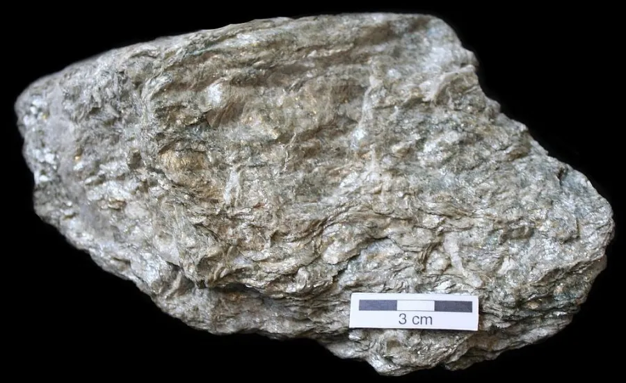
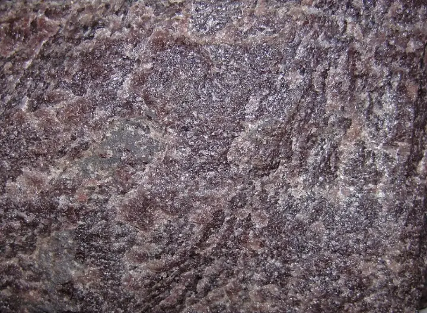
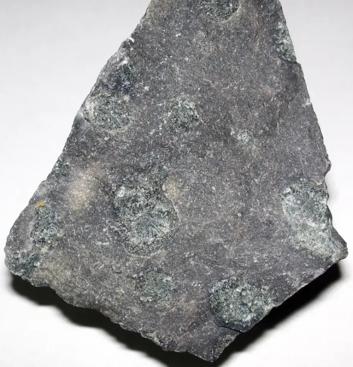
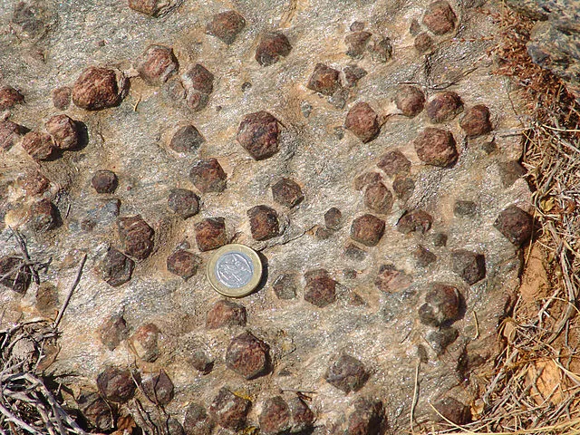
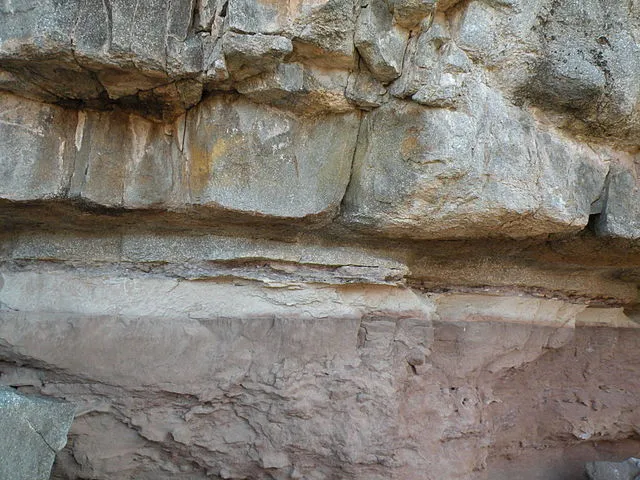
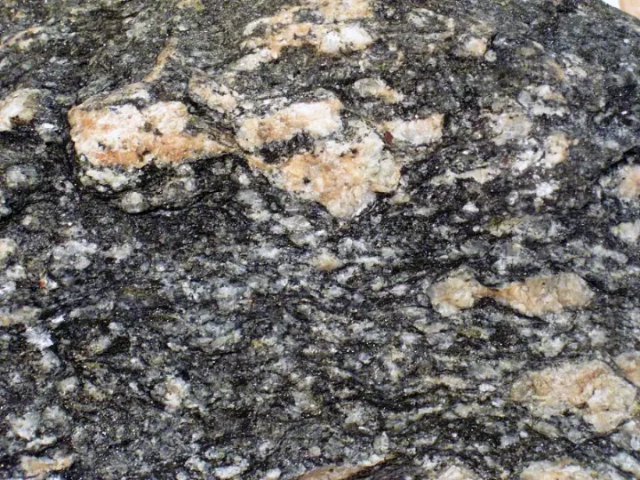

Mục tiêu học tập
Học xong Chương 6, bạn cần làm được từng việc dưới đây. Nhãn cho biết mục nào trình bày nội dung đó.
- 6.1Mô tả điều kiện nhiệt độ và áp suất của môi trường biến chất.
- 6.1Nêu và mô tả ba tác nhân biến chất chính.
- 6.1.2Mô tả tái kết tinh là gì và nó ảnh hưởng tới tinh thể khoáng vật ra sao.
- 6.2.1Giải thích phân phiến là gì và nó hình thành từ ứng suất định hướng và tái kết tinh như thế nào.
- 6.3Giải thích quan hệ giữa đá bảng, phylit, đá phiến và gneis theo mức độ biến chất.
- 6.3Định nghĩa khoáng vật chỉ thị.
- 6.4Giải thích tướng biến chất liên quan tới các quá trình kiến tạo mảng như thế nào.
- 6.4.2Mô tả vành biến chất tiếp xúc là gì và biến chất tiếp xúc ảnh hưởng tới đá xung quanh ra sao.
- 6.1.3Mô tả vai trò của biến chất nhiệt dịch trong việc tạo mỏ khoáng sản và thân quặng.
Cách dùng tài liệu này
Các từ gạch chân là thuật ngữ chính. Bấm vào một từ, hoặc mở Thuật ngữ ở góc dưới bên phải, để đọc và tìm mọi định nghĩa của chương. (metamorphic rock; tiếng Hy Lạp meta-, thay đổi; -morphos, hình dạng) là nhóm đá thứ ba của chu trình thạch học (Học phần 1). Cả đá magma và đá trầm tích đều có thể trở thành đá biến chất, và đá biến chất cũng có thể bị biến chất lần nữa. Vì biến chất do chuyển động của các mảng gây ra, những loại đá này là cuốn sách ghi lại lịch sử kiến tạo trong quá khứ.

6.1Các quá trình biến chất
(metamorphism) xảy ra khi đá rắn thay đổi thành phần, kiến trúc hoặc cả hai mà tinh thể không nóng chảy (nóng chảy sẽ tạo ra đá magma). Đá bị biến đổi là (protolith) hay đá mẹ (proto-, đầu tiên; lithos, đá). Phần lớn quá trình biến chất diễn ra sâu trong vỏ Trái Đất. Ba tác nhân thực hiện việc này (Bảng 6.1).
| Tác nhân | Thay đổi hóa học (khoáng vật mới) | Thay đổi kiến trúc, cấu tạo |
|---|---|---|
| Nhiệt độ (nhiệt) | Có | Có |
| Áp suất vây quanh | Có | Có |
| Ứng suất định hướng | Không (chỉ cơ học) | Có |
| Chất lưu có hoạt tính hóa học | Có, và có thể thêm hoặc lấy bớt nguyên tố | Thông qua khoáng vật mới |
6.1.1 Nhiệt độ (nhiệt)
Nhiệt độ đo năng lượng của một chất. Nhiệt độ tăng làm phá vỡ cân bằng hóa học (cân bằng cation) của khoáng vật. Nguyên tử có thể dao động mạnh đến mức nhảy từ vị trí này sang vị trí khác trong mạng tinh thể trong khi mạng vẫn nguyên vẹn, nên sự đổi chỗ này diễn ra trong đá rắn.
Nhiệt độ biến chất nằm giữa điều kiện bề mặt (trầm tích) và magma (Hình 6.2). Biến chất do nhiệt bắt đầu ở khoảng 200 °C và có thể tiếp diễn tới 700–1.100 °C; đá nóng hơn sẽ nóng chảy thành magma, khi đó không còn là biến chất. Nhiệt độ tăng theo độ sâu theo (Học phần 4), và đá biến chất ghi lại những thay đổi gắn với độ sâu này.
6.1.2 Áp suất
là lực trên một đơn vị diện tích. Giống như nhiệt, áp suất có thể phá vỡ cân bằng hóa học của khoáng vật. Trong địa chất, (stress) là lực tác dụng lên đá, còn (strain) là kết quả của nó, bao gồm cả những thay đổi biến chất trong khoáng vật. Áp suất lên đá biến chất có hai loại (Hình 6.3).
Áp suất vây quanh
Các lớp đá đè lên nhau chỉ vì chúng chồng lên nhau. Áp suất từ lớp đá bên trên được cân bằng từ bên dưới và hai bên, nên nó bằng nhau theo mọi hướng: đó là (confining pressure), còn gọi là áp suất thạch tĩnh. Áp suất này tăng theo độ sâu và, giống như nhiệt, thúc đẩy các phản ứng hóa học tạo ra khoáng vật mới. Đơn vị đo là : khoảng 1 bar ở mực nước biển và khoảng 10.000 bar ở đáy vỏ Trái Đất. Chương sách cho rằng áp suất biến chất bắt đầu từ khoảng 3.000 bar, ở độ sâu khoảng 15–35 km (xem Ghi chú kiểm chứng).
Ứng suất định hướng
(directed stress), còn gọi là ứng suất vi sai hay ứng suất kiến tạo, là sự cân bằng lực không đều, mạnh hơn theo một hoặc vài hướng. Nó sinh ra từ sự chuyển động của các mảng thạch quyển. Khác với áp suất vây quanh, chương sách cho rằng ứng suất định hướng không thúc đẩy phản ứng hóa học; nó làm thay đổi đá nguyên thủy về mặt cơ học, thay đổi cách sắp xếp, kích thước và hình dạng của tinh thể. Ứng suất định hướng tạo ra cấu tạo theo nhiều cách:
- tinh thể xoay và đổi hướng;
- tinh thể vỡ ra, làm giảm kích thước hạt;
- tinh thể lớn lên khi nguyên tử di chuyển;
- hình dạng tinh thể bị biến dạng.
Những thay đổi cơ học này diễn ra nhờ (recrystallization): khoáng vật hòa tan ở nơi đá chịu ứng suất cao và kết tủa (mọc lại) ở nơi ứng suất thấp hơn. Tái kết tinh có thể làm hạt lớn lên, giống như các bong bóng xà phòng cạnh nhau nhập lại thành bong bóng lớn hơn, và giúp đá biến dạng dẻo như mát-tít mà không vỡ. Những thay đổi này là manh mối cho biết các đứt gãy sâu đã hình thành và dịch chuyển ra sao. Một dấu hiệu điển hình của ứng suất định hướng là những viên cuội vốn tròn bị kéo dài thành hình bầu dục dẹt.
Kết quả là một cấu tạo đặc trưng. Hãy so sánh các hạt sắp xếp ngẫu nhiên, cài vào nhau của đá granit (đá magma) với các dải thẳng hàng của gneis (đá biến chất) hình thành ở nhiệt độ và áp suất cao (Hình 6.4, Hình 6.5).


6.1.3 Chất lưu
Tác nhân thứ ba là chất lưu có hoạt tính hóa học, được magma đang kết tinh thải ra hoặc được giải phóng từ các phản ứng biến chất. Thành phần chủ yếu là nước (H2O) và carbon dioxide (CO2), cùng lượng nhỏ hơn kali, natri, sắt, magie, canxi và nhôm. Chất lưu phản ứng với đá nguyên thủy và thay đổi thành phần khoáng vật của nó; khoáng vật mới có thể dùng nguyên tố từ cả đá lẫn chất lưu. Biến chất trong đó chất lưu đóng vai trò chính là (hydrothermal metamorphism), hay biến đổi nhiệt dịch. Nước tham gia phản ứng và làm các thành phần linh động hơn nhiều.
Mỏ quặng. Biến chất do chất lưu thường tạo ra mỏ khoáng sản có giá trị bên cạnh các thể xâm nhập magma. Ở vùng Cottonwood Canyons và Mineral Basin phía bắc Utah, chất lưu nóng từ một thể xâm nhập granit đang kết tinh, thể cán Little Cottonwood (Little Cottonwood Stock), đã phản ứng với và hòa tan (country rock; chủ yếu là đá vôi và đá dolomit), rồi kết tủa các khoáng vật mới: argentit (bạc sulfua), galenit (chì sulfua), chalcopyrit (sulfua đồng sắt) và vàng tự sinh.
Dưới đáy biển. Ở các trung tâm tách giãn giữa đại dương, vỏ đại dương mới phản ứng với nước biển. Biến đổi nhiệt dịch đá manti siêu mafic giàu olivin tạo ra , gồm các khoáng vật nhóm serpentin. Biến đổi cũng có thể lấy đi nguyên tố: nước biển thấm xuống qua các khe nứt trong đá bazan mới, còn nóng, và hòa tan những ion không vừa khít trong tinh thể silicat, như đồng. Nước giàu khoáng chất thoát ra ở các miệng phun thủy nhiệt gọi là (black smoker), đặt tên theo chất kết tủa màu sẫm hình thành khi nước nóng từ miệng phun gặp nước biển lạnh (Học phần 4). Các mỏ ống khói đen cổ đã cung cấp quặng đồng cho người dân đảo Síp từ khoảng năm 4.000 TCN, và sau đó cho người La Mã.


Kiểm tra: Câu hỏi Mục 6.1 trong giáo trình ↗
6.2Kiến trúc và cấu tạo
(metamorphic texture) mô tả hình dạng và sự định hướng của các hạt khoáng vật. Đá biến chất có cấu tạo phân phiến, không phân phiến hoặc tuyến. Bảng 6.2 ở cuối mục này tóm tắt cách nhận biết chúng.
Kiến trúc và cấu tạo
Tiếng Anh dùng một từ texture cho mọi đặc điểm hạt. Thạch học tiếng Việt tách hai khái niệm: kiến trúc chỉ kích thước, hình dạng và quan hệ giữa các hạt (ví dụ hạt lớn lên, cài vào nhau), còn cấu tạo chỉ cách các hạt sắp xếp trong không gian (ví dụ phân phiến, dải, tuyến). Tài liệu này theo cách phân biệt đó.
6.2.1 Phân phiến và cấu tạo tuyến
(foliation) là khi khoáng vật xếp thẳng hàng thành các mặt phẳng, chồng lên nhau như các trang sách (tiếng Latin folia, lá). Các khoáng vật dạng tấm như mica vốn mỏng và dẹt. Các khoáng vật khác, như hornblend, dài theo một chiều, giống bút chì hay cây kim; khi chúng xếp thẳng hàng, kết quả là (lineation). Tinh thể dạng que (hornblend, tourmalin, thạch anh bị kéo dài) có thể tạo ra một trong hai cấu tạo hoặc cả hai (Hình 6.8):
- Chỉ phân phiến: các hạt nằm trong mặt phẳng cùng với mica nhưng không cùng chỉ một hướng.
- Chỉ cấu tạo tuyến: các hạt cùng chỉ một hướng nhưng không tạo thành mặt phẳng, giống một bó ống hút.
- Phân phiến và tuyến: các hạt nằm trong mặt phẳng và cùng chỉ một hướng.
Đá phân phiến được gọi tên theo kiểu phân phiến. Theo thứ tự kích thước hạt tăng dần:
(slate) hạt mịn, có kiểu phân phiến gọi là (slaty cleavage): các tinh thể dạng tấm rất nhỏ của mica và chlorit mọc dẹt, vuông góc với hướng ứng suất. Khoáng vật của nó quá nhỏ để nhìn thấy. Các lớp mỏng của đá bảng có thể trông giống phân lớp trầm tích, nhưng chúng do ứng suất định hướng tạo ra và có thể cắt các lớp ban đầu theo bất kỳ góc nào, che khuất một phần hoặc toàn bộ phân lớp (Hình 6.9). Các tấm đá bảng mỏng được dùng lợp mái và lát nền.
(phyllite) có hạt dạng tấm lớn hơn, nên mặt phân phiến có ánh phản chiếu, thường kèm những nếp nhăn lượn sóng gọi là (crenulation). (schist) có hạt dạng tấm còn lớn hơn, nhìn thấy được từng tinh thể; muscovit, biotit và granat là các khoáng vật thường gặp. Kiểu phân phiến của nó, do các hạt dạng tấm nhìn thấy được xếp song song, gọi là (schistosity). Đá phiến thường chứa (porphyroblast), những tinh thể lớn (như granat) nằm giữa các hạt nhỏ, và được gọi tên theo khoáng vật: đá phiến mica, đá phiến granat (đá phiến mica có granat), đá phiến storolit.
(gneissic banding) là kiểu phân phiến trong đó các khoáng vật silicat nhìn thấy được tách thành các dải hoặc tuyến sáng và sẫm. Hạt thô và thường bị uốn nếp; đá đó là . Gneis hình thành ở nhiệt độ và áp suất cao nhất, nên có thể bắt đầu nóng chảy một phần. Gneis đã nóng chảy một phần, dạng chuyển tiếp giữa đá biến chất và đá magma, là : đá có dải sáng và sẫm, thường xoắn cuộn, với các lớp mỏng màu sáng song song hoặc cắt qua mặt phân phiến. Các lớp sáng là dung thể felsic đã tách ra khỏi các lớp sẫm màu bị biến chất cao, hoặc được tiêm vào từ nơi khác.
 Đá bảnghạt quá nhỏ để nhìn thấy
Đá bảnghạt quá nhỏ để nhìn thấy
Thớ chẻ đá bảngmỏ đá bảng cũ, Đức Phylitánh và vi uốn nếp
Phylitánh và vi uốn nếp
Đá phiếntinh thể mica nhìn thấy được- Gneisdải sáng và sẫm
 Migmatitnóng chảy một phần, dải xoắn cuộn
Migmatitnóng chảy một phần, dải xoắn cuộn
6.2.2 Không phân phiến
Đá có cấu tạo (non-foliated) không có phân phiến, tuyến hay bất kỳ sự sắp xếp hạt nào. Những đá này thường chỉ gồm một khoáng vật, nên tái kết tinh làm các tinh thể mọc cài vào nhau mà không theo hướng ưu tiên nào.
- (quartzite) hình thành từ cát kết. Tái kết tinh làm các hạt thạch anh lớn lên và cài vào nhau (Hình 6.11). Khi đập bằng búa, quartzit vỡ xuyên qua các hạt; cát kết, chỉ được gắn bằng lớp xi măng mỏng, vỡ vòng quanh chúng. Thạch anh bền cả về cơ học lẫn hóa học, nên quartzit rất cứng và chống phong hóa tốt.
- (marble; cẩm thạch) là đá vôi hoặc đá dolomit bị biến chất, gồm canxit hoặc dolomit. Tái kết tinh thường tạo ra các tinh thể lớn hơn cài vào nhau. Đá hoa có thể trông giống quartzit nhưng mềm hơn nhiều, và đá hoa canxit sủi bọt trong acid clohydric loãng.
- (hornfels) đặc sít, hạt mịn, cứng, vỡ thành khối hoặc thành mảnh sắc, gồm nhiều khoáng vật silicat. Tinh thể của nó trở nên nhỏ hơn trong quá trình biến chất, nhỏ đến mức cần phương pháp nghiên cứu chuyên sâu mới xác định được. Đá sừng thường gặp quanh các thể xâm nhập magma, và đá nguyên thủy của nó, bất cứ thứ gì từ đá bùn đến bazan, có thể khó nhận ra.



QuartzitQuartzit Baraboo, Wisconsin Đá hoađá hoa canxit trắng
Đá hoađá hoa canxit trắng
Đá sừngđặc sít, hạt mịn (dạng đốm)
| Phân phiến | Độ hạt | Đá | Đặc điểm kiến trúc, cấu tạo | Thành phần khoáng vật | Đá nguyên thủy |
|---|---|---|---|---|---|
| Phân phiến | Hạt mịn hoặc không thấy hạt | Đá bảng | Thớ chẻ đá bảng phát triển rõ; hạt hiển vi, đặc sít, hơi có ánh hoặc ánh mờ; gõ kêu lanh canh; vỡ thành tấm phẳng, cứng | Sét hoặc mica mịn, cỡ hiển vi | Đá phiến sét |
| Phylit | Kết tinh mịn; mica khó nhìn thấy nhưng tạo ánh; vỡ theo mặt lượn sóng | Silicat sẫm màu và mica | Bột kết hoặc đá phiến sét | ||
| Hạt vừa đến thô | Đá phiến mica | Tính phân phiến: phân phiến do các tinh thể nhìn thấy được xếp thẳng hàng; vỡ theo mặt phân phiến dạng vảy; hạt vừa đến mịn; lấp lánh | Chlorit, biotit, muscovit, granat, hornblend; khoáng vật dễ nhận ra được dùng trong tên đá; thường có ban biến tinh | Bột kết hoặc đá phiến sét | |
| Đá phiến granat | |||||
| Gneis | Cấu tạo dải gneis: hạt thô xếp thành các lớp sáng và sẫm xen kẽ, nhìn từ bên cạnh thấy dạng dải; kết tinh; không có thớ chẻ | Thạch anh và fenspat màu sáng; khoáng vật sắt-magie màu sẫm | Đá phiến sét hoặc đá granit | ||
| Migmatit* | Gneis xoắn cuộn với các lớp mỏng màu sáng | Lớp dung thể felsic màu sáng xen giữa các lớp sẫm màu bị biến chất cao | Gneis đã nóng chảy một phần | ||
| Không phân phiến | Hạt mịn hoặc không thấy hạt | Amphibolit | Kiến trúc kết tinh hạt vừa đến thô | Amphibol (hornblend) dạng tinh thể hình lưỡi | Bazan, gabro hoặc đá magma siêu mafic |
| Than anthracit | Vi tinh; ánh đen như thủy tinh; vết vỡ vỏ sò; tỷ trọng thấp | Vật chất hữu cơ mịn, giống hắc ín | Than đá | ||
| Đá sừng | Đặc sít, sẫm màu; hạt mịn hoặc vi tinh; rất cứng; màu xám, xám lục đến đen | Silicat sẫm màu cỡ hiển vi | Nhiều loại đá | ||
| Serpentinit | Vi tinh hoặc không thấy hạt; mặt nhẵn, lượn sóng; ánh mờ hoặc bóng; thường có màu lục | Serpentin; có thể thấy amiăng dạng sợi | Đá magma siêu mafic hoặc peridotit | ||
| Hạt mịn đến thô | Đá xà phòng (soapstone) hoặc đá phiến talc | Vi tinh hoặc không thấy hạt; vạch được bằng móng tay; màu lục, xám, nâu hoặc trắng; sờ trơn như xà phòng | Talc | Đá magma siêu mafic | |
| Quartzit | Kết tinh; cứng (vạch được thủy tinh); vỡ xuyên qua hạt; giống cát hoặc hạt đường; màu trắng, hồng, vàng nhạt, nâu, đỏ hoặc tím | Các hạt thạch anh gắn liền vào nhau; hạt không bong ra như ở cát kết | Cát kết thạch anh | ||
| Đá hoa | Kết tinh mịn (giống viên đường) đến vừa hoặc thô; màu trắng, hồng, xám và các màu khác; một số loại có hóa thạch | Canxit hoặc dolomit gắn chặt vào nhau; canxit sủi bọt trong HCl, dolomit chỉ sủi khi đã nghiền thành bột | Đá vôi hoặc đá dolomit | ||
| Cuội kết biến chất (metaconglomerate) | Giống cuội kết nhưng vỡ xuyên qua mảnh vụn dễ như vỡ vòng quanh chúng; cuội có thể bị kéo dài (dạng tuyến) hoặc bị thớ chẻ cắt qua | Cuội thường là granit, jasper, chert, thạch anh hoặc quartzit | Cuội kết |
Kiểm tra: Câu hỏi Mục 6.2 trong giáo trình ↗
6.3Mức độ biến chất
(metamorphic grade) là mức độ thay đổi do biến chất mà một đá đã trải qua, từ mức độ thấp (ít thay đổi) đến mức độ cao (thay đổi nhiều). Biến chất mức độ thấp bắt đầu ở nhiệt độ và áp suất ngay trên điều kiện trầm tích. Dãy đá bảng → phylit → đá phiến → gneis thể hiện mức độ tăng dần, với hạt thô dần ở mỗi bậc (Hình 6.14).
Các nhà địa chất xác định mức độ biến chất dựa vào (index mineral), những khoáng vật chỉ hình thành ở một khoảng nhiệt độ và áp suất nhất định. Chúng cũng gợi ý về đá nguyên thủy và điều kiện đã tạo ra đá. Chlorit, muscovit, biotit, granat và storolit là các khoáng vật chỉ thị theo thứ tự từ mức độ thấp đến cao. Một số đá được gọi tên theo khoáng vật chỉ thị có mức độ cao nhất mà chúng chứa: đá phiến chlorit (mức độ thấp), đá phiến muscovit (cao hơn một chút) và đá phiến granat, loại đã chịu áp suất và nhiệt độ cao hơn nhiều so với đá phiến chlorit.

Đá phiến granatban biến tinh granat, Syros, Hy Lạp Đá phiến kyanittinh thể kyanit dạng lưỡi màu xanh lam
Đá phiến kyanittinh thể kyanit dạng lưỡi màu xanh lam
Ba khoáng vật chỉ thị kyanit, andalusit và silimanit có cùng công thức hóa học Al2SiO5 nhưng khác cấu trúc tinh thể. Những khoáng vật như vậy là các (polymorph; Học phần 3). Dạng nào hình thành tùy thuộc vào áp suất và nhiệt độ, như (phase diagram) cho thấy (Hình 6.16): kyanit ở áp suất cao, andalusit ở áp suất thấp, silimanit ở nhiệt độ cao.
Kiểm tra: Câu hỏi Mục 6.3 và bài thực hành biểu đồ pha trong giáo trình ↗
6.4Môi trường biến chất
Giống đá magma, đá biến chất hình thành ở các đới áp suất (độ sâu) và nhiệt độ khác nhau, được biểu diễn trên biểu đồ áp suất–nhiệt độ (P–T). (facies) là sự mô tả khách quan một loại đá; với đá biến chất, một (metamorphic facies) là một tập hợp khoáng vật, tức một (mineral assemblage), bền vững trong một khoảng áp suất và nhiệt độ (Hình 6.17). Tên tướng đặt theo các khoáng vật đó, và nhận ra tướng của một đá là cách trực tiếp nhất để đọc lịch sử biến chất của nó.
Dãy đới Barrow
Cuối thế kỷ 19, nhà địa chất người Anh George Barrow đã lập bản đồ các đới khoáng vật chỉ thị ở một vùng biến chất khu vực tại Scotland (Hình 6.18). (Barrovian sequence) theo mức độ tăng dần là: chlorit (đá bảng và phylit) → biotit (phylit và đá phiến) → granat (đá phiến) → storolit (đá phiến) → kyanit (đá phiến) → silimanit (đá phiến và gneis).
Tổ hợp đầu tiên, chứa chlorit, là đặc trưng của (greenschist facies), hình thành ở áp suất và nhiệt độ tương đối thấp, ở rìa các vùng biến chất khu vực. "Lục" là do các khoáng vật màu lục như chlorit, serpentin và epidot; "đá phiến" là do các khoáng vật dạng tấm như muscovit.

Mỗi bối cảnh tạo ra những tướng khác nhau (Hình 6.19, Bảng 6.3). Từng bối cảnh được mô tả dưới đây.
| Kiểu | Bối cảnh | Điều kiện | Đá hoặc tướng điển hình |
|---|---|---|---|
| Chôn vùi | Bồn trầm tích sâu, > 2 km | T thấp, P tăng | Tướng zeolit; quartzit |
| Tiếp xúc | Quanh thể xâm nhập hoặc dưới dòng dung nham | T cao, P thấp | Đá sừng, quartzit, đá hoa |
| Khu vực | Dãy núi ở nơi các mảng hội tụ | T và P tăng trên diện rộng | Đá bảng → gneis; các đới Barrow |
| Đới hút chìm | Tấm đại dương chìm xuống | P cao, T thấp | Đá phiến glaucophan, đá lục |
| Đứt gãy | Đới đứt gãy | Trượt cắt; giòn gần mặt đất, dẻo ở sâu hơn | Bột đá, cataclasit, mylonit |
| Va chạm | Va chạm của thiên thạch (cầu lửa) | P rất cao, tác động rất nhanh | Thạch anh sốc, nón vỡ, tektit |
| Nhiệt dịch | Gần thể xâm nhập; sống núi giữa đại dương | Chất lưu nóng có hoạt tính | Mỏ quặng, serpentinit (6.1.3) |
6.4.1 Biến chất chôn vùi
(burial metamorphism) xảy ra khi đá bị chôn sâu hơn khoảng 2.000 m (1,24 dặm), thường trong các bồn trầm tích dưới những lớp trầm tích dày. Nó là sự tiếp nối của (diagenesis), quá trình diễn ra trong lúc thạch hóa (Học phần 5). Nó có thể biến khoáng vật sét smectit trong đá phiến sét thành một loại sét khác là illit, hoặc biến cát kết thạch anh thành quartzit. Hệ tầng Big Cottonwood ở Utah được lắng đọng thành cát ven bờ vào cuối Nguyên sinh, bị chôn sâu và biến chất thành quartzit, bị uốn nếp, rồi sau đó lộ ra ở dãy Wasatch. Nhiệt độ và áp suất vây quanh tăng theo độ sâu tạo ra đá mức độ thấp với tổ hợp khoáng vật của (zeolite facies).
6.4.2 Biến chất tiếp xúc
(contact metamorphism) xảy ra ở đá chịu nhiệt độ cao và áp suất thấp, như khi magma nóng xâm nhập vào đá nguyên thủy hoặc dung nham chảy tràn lên trên nó. Áp suất thấp nhất tạo ra (hornfels facies); áp suất cao hơn có thể tạo ra tướng đá phiến lục, amphibolit hoặc granulit. Như mọi khi, kiến trúc và hóa học của đá nguyên thủy quyết định kết quả: đá phiến sét và bazan hạt mịn, vốn tương tự nhau về hóa học, tái kết tinh thành đá sừng; cát kết (silica) thành quartzit; đá vôi (carbonat) thành đá hoa (Hình 6.20).
Khi biến chất tiếp xúc diễn ra sâu hơn trong lòng đất, nó tạo thành các vành tướng khác nhau bao quanh thể xâm nhập, gọi là (contact aureole). Quanh thể cán Alta (Alta Stock) ở Little Cottonwood Canyon, Utah, các vành khoáng vật chỉ thị forsterit (một olivin) và tremolit (một amphibol) bao quanh thể xâm nhập, với một vành talc nằm xa hơn trong đá dolomit (Hình 6.22).

6.4.3 Biến chất khu vực
(regional metamorphism) xảy ra khi đá bị nung nóng và nén ép trên một diện rộng, thường ở các dãy núi hình thành nơi các mảng lục địa hội tụ. Đây là bối cảnh của dãy đới Barrow: mức độ thấp nhất ở sườn núi và cao nhất gần lõi núi, gần ranh giới mảng nhất.
Một ví dụ cổ là phần bắc dãy Appalachia. Đi về phía đông từ New York qua Vermont tới New Hampshire, đá thay đổi từ đá trầm tích sang đá bảng, phylit, đá phiến, gneis, migmatit và cuối cùng là granit của lõi magma (Hình 6.23); New Hampshire có biệt danh là "Bang Granit". Đi tiếp về phía đông từ đông New Hampshire ra bờ biển, dãy đá đảo ngược lại.
6.4.4 Biến chất đới hút chìm
(subduction zone metamorphism) là một kiểu biến chất khu vực, nơi một tấm vỏ đại dương bị hút chìm xuống dưới vỏ lục địa (Học phần 2). Đá là chất cách nhiệt tốt, nên tấm đang chìm nóng lên chậm trong khi áp suất lên nó tăng nhanh: áp suất cao, nhiệt độ thấp. (glaucophane), một khoáng vật màu xanh lam rõ rệt, là khoáng vật chỉ thị của (blueschist facies; còn gọi tướng đá phiến lam). Dãy Coast Range ở California gần San Francisco có đá tướng đá phiến glaucophan sinh ra do hút chìm, gồm đá phiến glaucophan, đá lục và chert đỏ. (greenstone) là bazan bị biến chất, có màu lục nhờ khoáng vật chỉ thị chlorit.
 Đá phiến glaucophanđảo Santa Catalina, California
Đá phiến glaucophanđảo Santa Catalina, California Đá lụcbazan gối bị biến chất, Michigan
Đá lụcbazan gối bị biến chất, Michigan
6.4.5 Biến chất đứt gãy
Nhiều đá biến chất hình thành dọc các đứt gãy, và loại đá nào hình thành tùy thuộc vào độ sâu (Hình 6.25):
- Gần mặt đất, đứt gãy giòn lặp đi lặp lại nghiền đá mịn như bột làm bánh: đó là (rock flour).
- Sâu hơn, đứt gãy tạo ra , hỗn hợp đá bị nghiền hỗn loạn, hầu như không có cấu tạo bên trong.
- Sâu hơn nữa, nơi biến dạng trở nên dẻo, hình thành nhờ (dynamic recrystallization) dưới tác dụng trượt cắt định hướng, thường làm giảm kích thước hạt.
- Khi các tinh thể lớn hơn, bền hơn (fenspat, thạch anh, granat) trong nền mylonit bị trượt cắt thành hình mắt bất đối xứng, chúng được gọi là (tiếng Đức nghĩa là "những con mắt").
 Mylonitvệt mảnh bao quanh các hạt lớn
Mylonitvệt mảnh bao quanh các hạt lớn
Gneis augen"mắt" fenspat, Idaho
6.4.6 Biến chất va chạm
(shock metamorphism, hay impact metamorphism) là kết quả của va chạm thiên thạch hoặc (bolide) khác, hoặc một cú sốc áp suất cao tương tự. Áp suất rất cao, cùng nhiệt độ cao nhưng ít khắc nghiệt hơn, tác động trong thời gian rất ngắn. Nó tạo ra:
- (planar deformation features, PDF; còn gọi phiến sốc): các mặt phẳng hẹp của vật chất thủy tinh với hướng xác định trong hạt silicat. Thạch anh có các cấu trúc này là (shocked quartz).
- (shatter cone): các mảnh đá hình nón do khe nứt phân nhánh tạo ra khi va chạm, từ cỡ hiển vi đến vài mét. Chúng không hẳn là sản phẩm biến chất nhưng thường đi kèm biến chất va chạm; trong đá hạt mịn chúng có hoa văn "đuôi ngựa".
- Khoáng vật chỉ thị, thường chỉ thấy được dưới kính hiển vi: các dạng đa hình của thạch anh là và , cần áp suất rất cao và nhiệt độ từ trung bình đến cao (700–1.200 °C).
- Thủy tinh. (tektite) là các hạt thủy tinh cỡ sỏi bị va chạm bắn ra. Chúng trông giống thủy tinh núi lửa nhưng không chứa nước hay ban tinh, có thành phần hóa học tổng thể và đồng vị khác, và chứa các mảnh khoáng vật bị sốc đã nóng chảy một phần.
 Thạch anh sốccấu trúc biến dạng phẳng
Thạch anh sốccấu trúc biến dạng phẳng Nón vỡhố va chạm Charlevoix, Quebec
Nón vỡhố va chạm Charlevoix, Quebec Tektitthủy tinh va chạm
Tektitthủy tinh va chạm
Các loại thủy tinh tự nhiên khác hình thành mà không cần núi lửa. Tektit khác về hóa học với (trinitite), sinh ra từ các vụ nổ hạt nhân, và (fulgurite), sinh ra do sét đánh. (pseudotachylyte, "tachylit giả") là thủy tinh sinh ra do nhiệt ma sát trượt cắt mạnh, như trên đứt gãy; nó trông giống thủy tinh núi lửa tachylit nhưng không có nguồn gốc núi lửa. Chương sách dùng thuật ngữ này cho mọi thủy tinh địa chất không có nguồn gốc núi lửa, nhưng nghĩa chuẩn của nó là dung thể ma sát sinh ra do đứt gãy hoặc va chạm (xem Ghi chú kiểm chứng).
Kiểm tra: Câu hỏi Mục 6.4 trong giáo trình ↗
Tóm tắt
Biến chất biến đổi các đá có sẵn (đá nguyên thủy) thành đá mới với khoáng vật mới và kiến trúc, cấu tạo mới. Nhiệt độ và áp suất tăng là nguyên nhân chính, còn chất lưu làm vật chất linh động hơn đáng kể. Đá biến chất được nhận biết chủ yếu qua cấu tạo: cấu tạo phân phiến sinh ra từ các khoáng vật dạng tấm xếp thành mặt phẳng, còn đá không phân phiến không có cấu tạo định hướng bên trong. Mức độ biến chất cho biết đá đã trải qua bao nhiêu biến chất, còn tướng, tức các tập hợp khoáng vật, giúp giải đoán lịch sử của đá. Va chạm mảng, hút chìm, đứt gãy và cả va chạm từ không gian đều gây ra biến chất.
Tóm tắt nhanh
- Biến chất: thay đổi ở trạng thái rắn, từ khoảng 200 °C cho tới khi nóng chảy (700–1.100 °C).
- Tác nhân: nhiệt, áp suất vây quanh (đều, tạo khoáng vật mới), ứng suất định hướng (không đều, sắp xếp và làm biến dạng hạt), chất lưu (nhiệt dịch; quặng, serpentinit, ống khói đen).
- Tái kết tinh: hòa tan ở nơi chịu ứng suất, mọc lại ở nơi ứng suất thấp hơn.
- Phân phiến: đá bảng → phylit → đá phiến → gneis → migmatit (mức độ và kích thước hạt tăng dần). Không phân phiến: quartzit, đá hoa, đá sừng.
- Khoáng vật chỉ thị: chlorit → biotit → granat → storolit → kyanit → silimanit (dãy Barrow). Kyanit, andalusit, silimanit là các dạng đa hình Al2SiO5.
- Tướng: zeolit, đá sừng, đá phiến lục, amphibolit, granulit, đá phiến glaucophan, eclogit.
- Bối cảnh: chôn vùi, tiếp xúc (vành biến chất tiếp xúc), khu vực, hút chìm (đá phiến glaucophan), đứt gãy (bột đá, cataclasit, mylonit), va chạm (thạch anh sốc, nón vỡ, tektit).
Tài liệu tham khảo
Ghi chú kiểm chứng
Mọi nhận định trong tài liệu này đều đã được đối chiếu với chương sách. Nơi chương sách khác với tài liệu tham khảo hiện hành hoặc tự mâu thuẫn, tài liệu dùng giá trị đã sửa và liệt kê điểm khác biệt ở đây, để bạn biết giáo trình viết gì.
| Chủ đề | Chương sách viết | Ghi chú |
|---|---|---|
| Áp suất biến chất | "3,000 bars around 50,000 bars, which occurs around 15–35 kilometers below the surface" | Với khoảng 3,5 km mỗi kilobar, 15–35 km tương ứng khoảng 4.000–10.000 bar, khớp với chính câu "10.000 bar ở đáy vỏ Trái Đất" của chương. 50.000 bar (5 GPa) chỉ đạt được ở độ sâu gần 150 km, trong đá bị hút chìm sâu. Tài liệu chỉ nêu giá trị bắt đầu và khoảng độ sâu. |
| Đá nguyên thủy của serpentinit | "Mafic mantle rock, such as olivine and basalt" | Serpentinit hình thành từ đá siêu mafic giàu olivin (peridotit); olivin là khoáng vật, còn bazan (mafic) biến đổi thành đá lục. Tài liệu viết "đá manti siêu mafic giàu olivin". |
| Các đới quanh thể cán Alta | A granite "surrounded first by rings of … tremolite and … forsterite, with a ring of talc further away" | Moore & Kerrick (1976) lập bản đồ các đới, từ mặt tiếp xúc ra ngoài, là (periclas,) forsterit, tremolit, talc; thể cán là granodiorit. Hình 6.22 dùng thứ tự này. |
| Coesit và stishovit | "Intense pressure (> 10 GPa)" is required | Stishovit cần khoảng 8–10 GPa trở lên, nhưng coesit hình thành từ khoảng 2–3 GPa. Tài liệu viết "áp suất rất cao". |
| Pseudotachylit | "All geologic glasses not derived from volcanoes" | Theo cách dùng chuẩn, pseudotachylit là đá dạng thủy tinh sinh ra do nóng chảy ma sát khi đứt gãy trượt nhanh (hoặc trong cấu trúc va chạm), không phải mọi thủy tinh không có nguồn gốc núi lửa; tektit, fulgurit và trinitit có tên riêng. |
| Ứng suất định hướng | "Occurs at much lower pressures" than confining pressure | Ứng suất định hướng cộng thêm vào áp suất vây quanh chứ không thay thế nó; ứng suất vi sai trong đá nhỏ hơn nhiều so với áp suất vây quanh ở dưới sâu. Tài liệu không nhắc lại phép so sánh này. |
| Danh sách khoáng vật chỉ thị ở mục 6.3 | "Chlorite, muscovite, biotite, garnet, and staurolite" | Dãy Barrow ở mục 6.4 bắt đầu bằng chlorit → biotit và thêm kyanit, silimanit; muscovit phổ biến suốt các mức độ thấp và trung bình chứ không phải một đới riêng. Cả hai danh sách được nêu đúng như chương sách viết. |
| Tướng zeolit trên biểu đồ P–T | Trục của biểu đồ bắt đầu từ 300 °C và 2 kbar | Trên biểu đồ, trường zeolit nằm ở khoảng 300–355 °C và 2–5 kbar, và Hình 6.17 giữ nguyên như vậy. Vì biểu đồ bắt đầu từ 300 °C, phần lạnh hơn của tướng zeolit (biến chất chôn vùi từ khoảng 200 °C, mục 6.1.1) nằm ngoài biểu đồ. |
| Lỗi chính tả | "Hydrothermal alternation"; "metamorphized"; "cataclasites"/"cataclastites"; "augens" | Alteration; metamorphosed; cataclasites; augen (vốn đã là số nhiều trong tiếng Đức). |
Các sơ đồ đã được đối chiếu với chương sách và tài liệu chuẩn: thớ chẻ đá bảng song song với mặt trục nếp uốn và vuông góc với hướng rút ngắn; điểm ba của Al2SiO5 gần 500 °C và 3,8 kbar (Holdaway, 1971; các hiệu chỉnh khác đặt nó gần 550 °C và 4,5 kbar); trường tướng vẽ lại từ biểu đồ P–T của chương, các đường biến đổi là sơ đồ; thứ tự khoáng vật trong vành tiếp xúc theo Moore & Kerrick (1976); chuyển tiếp giòn–dẻo ở khoảng 10–15 km trong vỏ lục địa (Sibson, 1977; Scholz, 1988). Các hình chu trình thạch học, áp suất so với ứng suất, granit so với gneis, cấu tạo hạt, phân phiến so với phân lớp, biểu đồ P–T và phần lớn ảnh đá của chương được ghi "All Rights Reserved" nên không được sao chép; tài liệu này vẽ lại các sơ đồ và dùng ảnh có giấy phép mở từ Wikimedia Commons.
Đối chiếu thuật ngữ tiếng Việt
Thuật ngữ được đối chiếu với Bách khoa thư Địa chất (mục "Đá biến chất", Phan Trường Thị) và tên mục Wikipedia tiếng Việt. Theo các nguồn này, tài liệu dùng: đá biến chất, phân phiến, tính phân phiến, vi uốn nếp, ban biến tinh, phylit, đá phiến, gneis, migmatit, đá sừng, đá hoa (cẩm thạch), quartzit, tướng biến chất, tổ hợp cộng sinh khoáng vật, tướng zeolit, tướng đá phiến lục, amphibolit, granulit, eclogit, đá phiến glaucophan (đá phiến lam), đá lục, coesit, đá vây quanh, mức độ biến chất, khoáng vật chỉ thị, silimanit, storolit, kyanit, andalusit, granat, chlorit, tremolit, forsterit, talc, biến chất nhiệt dịch; và theo Wikipedia tiếng Việt: ứng suất, biểu đồ pha, gradien địa nhiệt, đá bảng, serpentinit, mylonit, stishovit, fulgurit, cầu lửa, anthracit. Các thuật ngữ sau chưa tìm thấy trong nguồn chính thức, nên dùng cách dịch sát nghĩa hoặc phiên âm kèm tên tiếng Anh: đá nguyên thủy (protolith), áp suất vây quanh, ứng suất định hướng, tái kết tinh và tái kết tinh động, cấu tạo tuyến (lineation), thớ chẻ đá bảng (slaty cleavage), cấu tạo dải gneis, dãy đới Barrow, biến chất chôn vùi, tướng đá sừng, vành biến chất tiếp xúc (aureole), biến chất đới hút chìm, bột đá (rock flour), cataclasit, augen, biến chất va chạm, cấu trúc biến dạng phẳng (PDF), thạch anh sốc, nón vỡ (shatter cone), tektit, trinitit, pseudotachylit, ống khói đen (black smoker), chuyển tiếp giòn–dẻo, đá xà phòng (soapstone), cuội kết biến chất (metaconglomerate), tên các tướng phụ lawsonit/epidot.
Nguồn & trích dẫn
Nội dung tóm tắt từ An Introduction to Geology, Chương 6 (tác giả đóng góp TS. Peter Davis), © 2017 Chris Johnson, Matthew D. Affolter, Paul Inkenbrandt và Cam Mosher, giấy phép CC BY-NC-SA 4.0. Hình ảnh được ghi nguồn trong từng chú thích; các hình chương sách ghi "All Rights Reserved" không được sử dụng.
- Từ chương sách, theo giấy phép trong phần ghi nguồn hình của chương: ống khói đen, mỏ đá bảng, đá phiến, gneis, quartzit cận cảnh, cát, đá phiến granat, bản đồ các đới Barrow, vết lộ Henry Mountains, thạch anh sốc, nón vỡ, tektit.
- Nguồn bên ngoài, từ Wikimedia Commons: ảnh mở đầu (NPS, phạm vi công cộng), granit (USGS, phạm vi công cộng, cũng dùng ở Học phần 4), đá bảng, phylit, migmatit, quartzit Baraboo, đá hoa, đá sừng, đá phiến kyanit, serpentinit, đá phiến glaucophan, đá lục, mylonit, gneis augen; giấy phép như ghi trong từng chú thích.
- Khoảng nhiệt độ, áp suất và ứng suất, các kiểu cấu tạo, phân phiến so với phân lớp, biểu đồ mức độ biến chất, biểu đồ pha Al2SiO5, biểu đồ tướng, các bối cảnh kiến tạo, vành biến chất tiếp xúc, các đới quanh thể cán Alta, mặt cắt Appalachia và đá đứt gãy: vẽ cho tài liệu này.
- Tài liệu bên ngoài dùng để kiểm chứng: Holdaway (1971), Moore & Kerrick (1976), Sibson (1977), Scholz (1988).
- Đối chiếu thuật ngữ tiếng Việt: Bách khoa thư Địa chất (mục "Đá biến chất", Phan Trường Thị) và tên mục Wikipedia tiếng Việt.